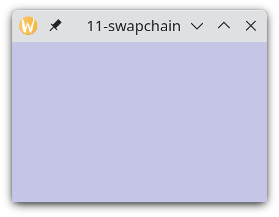

Minule jsme vytvořili třídu VulkanWindow. Tématem dneška bude swapchain, tedy objekt pro zobrazování výsledků rendrování v okně.
Swapchain doslova znamená česky něco jako vyměňovací řetěz, či vyměňovací soustrojí. Pro nás tedy, vágně řečeno, soustrojí, které vyměňuje obrázky na obrazovce tak, jak je postupně rendrujeme. Samotná dokumentace k Vulkan definuje swapchain jako objekt, který "poskytuje schopnost zobrazit výsledky rendrování na surface". A protože většinou nerendrujeme jediný obrázek, tak jako ani film není složen z jediného obrázku, je potřeba je jeden za druhým vyměňovat tak, aby vznikla na obrazovce například plynulá vizualizace nějakého děje.
V tomto díle si nejprve vypíšeme seznam surface formátů, který náš surface podporuje. Z nich si vybereme jeden, který následně použijeme při vytváření swapchainu. Pak, zkráceně řečeno, si vytvoříme objekt framebufferu, do něj vyrendrujeme trojúhelník a výsledek rendrování za pomoci swapchainu zobrazíme na obrazovce.
Můžeme si stáhnout zdrojáky a zkusit je zkompilovat.
V minulém díle jsme v seznamu dostupných zařízení přeskočili všechna, která nepodporují VK_KHR_swapchain extension. Pak jsme mezi zbylými zařízeními vybrali jedno, pro které jsme při vytváření logického zařízení povolili tuto extension. A dnes tuto extension použijeme. K tomu ale potřebujeme vybrat surface formát. Začneme tedy výpisem podporovaných surface formátů, což provedeme hned po vytvoření logického zařízení:
// print surface formats cout << "Surface formats:" << endl; vector<vk::SurfaceFormatKHR> availableSurfaceFormats = physicalDevice.getSurfaceFormatsKHR(surface); for(vk::SurfaceFormatKHR sf : availableSurfaceFormats) cout << " " << vk::to_string(sf.format) << ", color space: " << vk::to_string(sf.colorSpace) << endl;
Jejich výpis může vypadat například takto:
Surface formats: B8G8R8A8Unorm, color space: SrgbNonlinear B8G8R8A8Srgb, color space: SrgbNonlinear A2B10G10R10UnormPack32, color space: SrgbNonlinear
V první položce na každém řádku vidíme podporu B8G8R8A8 formátu v podobě Unorm a Srgb. Druhá položka je pak SrgbNonlinear, což je barevný prostor obrazovky, anglicky color space. Půjdeme-li do technických detailů, tak většina obrazovek dnes používá sRGB barevný prostor. A to je přesně, co značí SrgbNonlinear. Barvy jsou shodné se standardem BT.709, ale transférová funkce je trochu jiná. Pro nás stačí vědět, že je to přibližně gamma s koeficientem 2.2.
A když už jsme zmínili, že gamma není rovno jedné, znamená to, že 256 hodnot, které typicky máme pro každou z barevných složek RGB, není rozloženo linearně. Rozdíl mezi hodnotami 0 a 1 nebo 1 a 2 je mnohem menší, než rozdíl mezi hodnotami 254 a 255. U nízkých hodnot tedy dochází ke kompresi a u vysokých k expanzi. Historicky toto zakódování vzniklo díky starým CRT obrazovkám, které tímto způsobem zobrazovaly. Nicméně i dnes v době LCD obrazovek má toto kódování smysl, neboť velmi dobře sedí s citlivostí lidského oka. Lidské oko je velmi citlivé na drobné změny jasu u temných barev a zároveň méně citlivé na absolutní změnu jasu u světlých barev. Mnohem efektivněji tedy využijeme 256 hodnot, které máme k dispozici. Pro tyto výhody je sRGB kódování často používáno například i při ukládání a zobrazování textur.
Jak tedy využít tohoto gamma zakódování, které nám sRGB formáty nabízí? V našem případě stačí použít B8G8R8A8Srgb formát. Při jeho použití je naše barva, kterou zapisujeme ve fragment shaderu automaticky zkonvertována gamma konverzí na odpovídající sRGB hodnotu a zapsána do color bufferu. Pokud bychom použili formát, který není Srgb, v našem případě tedy jeden ze dvou formátů Unorm, museli bychom si gamma konverzi počítat v shaderu sami.
Při color space SrgbNonlinear jsou hodnoty v color bufferu interpretovány jako sRGB hodnoty a i na obrazovku obyčejně putují jako sRGB hodnoty. Obrazovka je pak korektně zpracuje a zobrazí každou hodnotu jako pixel vyzařující to správné množství fotonů odpovídající dané sRGB hodnotě.
Doplňme ještě, že kromě sRGB barevného prostoru z roku 1996, který umožňuje zobrazit asi třetinu z viditelného barevného spektra (měřeno podle CIE 1931), máme i poměrně známý Adobe RGB z roku 1998, který umožňuje zobrazit asi polovinu viditelných barev a dále třeba moderní Rec. 2020 z roku 2012, který umí asi tři čtvrtiny viditelných barev. Pro zobrazení tak velkého barevného rozsahu však potřebujeme především obrazovku, projektor nebo tiskárnu, která takovýto rozsah zvládá. My však pro tuto chvíli zůstaneme u široce rozšířeného sRGB, který je ve Vulkanu snadno použitelný.
Následuje kód výběru formátu:
// choose surface format
constexpr const array allowedSurfaceFormats{
vk::SurfaceFormatKHR{ vk::Format::eB8G8R8A8Srgb, vk::ColorSpaceKHR::eSrgbNonlinear },
vk::SurfaceFormatKHR{ vk::Format::eR8G8B8A8Srgb, vk::ColorSpaceKHR::eSrgbNonlinear },
vk::SurfaceFormatKHR{ vk::Format::eA8B8G8R8SrgbPack32, vk::ColorSpaceKHR::eSrgbNonlinear },
};
if(availableSurfaceFormats.size()==1 && availableSurfaceFormats[0].format==vk::Format::eUndefined)
// Vulkan spec allowed single eUndefined value until 1.1.111 (2019-06-10)
// with the meaning you can use any valid vk::Format value.
// Now, it is forbidden, but let's handle any old driver.
surfaceFormat = allowedSurfaceFormats[0];
else {
for(vk::SurfaceFormatKHR sf : availableSurfaceFormats) {
auto it = std::find(allowedSurfaceFormats.begin(), allowedSurfaceFormats.end(), sf);
if(it != allowedSurfaceFormats.end()) {
surfaceFormat = *it;
goto surfaceFormatFound;
}
}
if(availableSurfaceFormats.size() == 0) // Vulkan must return at least one format (this is mandated since Vulkan 1.0.37 (2016-10-10), but was missing in the spec before probably because of omission)
throw std::runtime_error("Vulkan error: getSurfaceFormatsKHR() returned empty list.");
surfaceFormat = availableSurfaceFormats[0];
surfaceFormatFound:;
}
cout << "Using format:\n"
<< " " << to_string(surfaceFormat.format) << ", color space: " << to_string(surfaceFormat.colorSpace) << endl;
V naší aplikaci budeme podporovat tři formáty, které máme v poli allowedSurfaceFormats. Použijeme ten, který z nich nalezneme jako první mezi těmi, které nám vrátil Vulkan. Kód je trochu složitější, protože ošetřuje nestandardní situace, ale jádro je jediný cyklus for, který je zvýrazněn tučně a který prochází všechny availableSurfaceFormats. Po proběhnutí celého algoritmu vypíšeme vybraný surface formát.
Následuje vytvoření renderPasu. Tento kód můžeme přeskočit, neboť je stejný jako v minulých dílech. Můžeme se tedy vrhnout na vytvoření swapchainu v callbacku VulkanWindow::setRecreateSwapchainCallback(), který je v kódu další v pořadí a který je zároveň hlavním tématem dnešního dílu.
Swapchain nám umožňuje zobrazit výsledky rendrování na vk::Surface. Z pohledu programátora je swapchain abstrakce pro skupinu vk::Image obrázků svázaných s vk::Surface. Tyto obrázky pak mohou být prezentovány na tomto vk::Surface.
Swapchain vytváříme nejen při vytváření okna, ale kdykoliv, když vznikne požadavek na jeho nové vytvoření. To se typicky děje například při změně velikosti okna. Našim řešením je callback, který VulkanWindow zavolá, kdykoliv potřebuje nový swapchain. Tento callback zaregistrujeme metodou VulkanWindow::setRecreateSwapchainCallback(). Jako parametr předáme lambda funkci dělající vše potřebné:
window.setRecreateSwapchainCallback(
[](const vk::SurfaceCapabilitiesKHR& surfaceCapabilities, vk::Extent2D newSurfaceExtent) {
// clear resources
swapchainImageViews.clear();
framebuffers.clear();
// print info
cout << "Recreating swapchain (extent: " << newSurfaceExtent.width << "x" << newSurfaceExtent.height
<< ", extent by surfaceCapabilities: " << surfaceCapabilities.currentExtent.width << "x"
<< surfaceCapabilities.currentExtent.height << ", minImageCount: " << surfaceCapabilities.minImageCount
<< ", maxImageCount: " << surfaceCapabilities.maxImageCount << ")" << endl;
Jako první uvolníme případně dříve alokované prostředky a vypíšeme si některé informace, které by nás mohly zajímat.
Pak následuje vytvoření nového swapchainu:
// create new swapchain
constexpr const uint32_t requestedImageCount = 2;
vk::UniqueSwapchainKHR newSwapchain =
device->createSwapchainKHRUnique(
vk::SwapchainCreateInfoKHR(
vk::SwapchainCreateFlagsKHR(), // flags
window.surface(), // surface
surfaceCapabilities.maxImageCount==0 // minImageCount
? max(requestedImageCount, surfaceCapabilities.minImageCount)
: clamp(requestedImageCount, surfaceCapabilities.minImageCount, surfaceCapabilities.maxImageCount),
surfaceFormat.format, // imageFormat
surfaceFormat.colorSpace, // imageColorSpace
newSurfaceExtent, // imageExtent
1, // imageArrayLayers
vk::ImageUsageFlagBits::eColorAttachment, // imageUsage
(graphicsQueueFamily==presentationQueueFamily) ? vk::SharingMode::eExclusive : vk::SharingMode::eConcurrent, // imageSharingMode
uint32_t(2), // queueFamilyIndexCount
array<uint32_t, 2>{graphicsQueueFamily, presentationQueueFamily}.data(), // pQueueFamilyIndices
surfaceCapabilities.currentTransform, // preTransform
vk::CompositeAlphaFlagBitsKHR::eOpaque, // compositeAlpha
vk::PresentModeKHR::eFifo, // presentMode
VK_TRUE, // clipped
swapchain.get() // oldSwapchain
)
);
swapchain = move(newSwapchain);
Swapchain vlastní několik obrázků typu vk::Image. Jejich počet nastavíme v konstantě requestedImageCount. Nám pro tento díl budou stačit obrázky dva. Tedy double buffering. Jeden pro front a druhý pro back buffer. Front buffer je typicky zobrazován na obrazovce a do back bufferu kreslíme. Až je obrázek dokončen, je dán swapchainu požadavek k prohození těchto dvou bufferů.
Někdo může argumentovat, že při tripple bufferingu, tedy třech obrázcích, dosáhne vyššího výkonu. My se ale tripple bufferingu vyhneme, protože prodlužuje latenci od začátku rendrování po chvíli, kdy se obrázek dostane na obrazovku. Kvůli latenci tedy budeme preferovat double buffering.
Pojďme na jednotlivé parametry, které předáváme pro vytvoření swapchainu. Prvním netriviálním parametrem je třetí parametr, tedy minImageCount. Zde potřebujeme omezit náš requestedImageCount do mezí, které podporuje surface. Kód není obyčejný clamp(), protože maxImageCount může být nulový, což indikuje, že není horní mez. Musíme tedy uzpůsobit kód, aby správně ošetřil tento případ.
Jako další parametry předáváme formát a colorSpace, které jsme dříve vybrali. Parametr imageExtent nastavíme na rozměry okna, přesněji řečeno, na rozměry klientské části okna, tedy okna bez dekorace.
K zajímavým parametrům patří ještě imageSharingMode, který nastavíme na eConcurrent, pokud používáme jinou třídu front pro rendering a jinou pro prezentaci. Při eConcurrent sharing mode se pak použijí i následující dva parametry, které udávají, které třidy front budou se swapchainem pracovat.
Dalšími parametry říkáme, že obraz nebudeme transformovat, ani nechceme provádět alpha-blending s okny a pozadím, které se nachází za naším oknem. Jinými slovy, nemáme poloprůhledné okno. Parametr presentMode si vysvětlíme v budoucnu. Prozatím jej necháme na hodnotě eFifo, což v případě dvou bufferů odpovídá jednoduché funkci double-bufferingu.
Parametr clipped nastavíme na hodnotu VK_TRUE, abychom dovolili driveru nerendrovat části okna, které jsou například zakryty jiným oknem nebo jinak neviditelné. Poslední parametr oldSwapchain nastavíme na předchozí swapchain, který jsme pro okno měli vytvořen, a tím umožníme recyklovat mnohé objekty a prostředky. Ty pak nejsou zbytečně se starým swapchainem zlikvidovány a nejsou znova alokovány v novém swapchainu. Co Vulkan zrecykluje pak záleží na driveru. Pokud aplikace právě startuje a proměnná swapchain obsahuje ještě nullptr, není pochopitelně co recyklovat a Vulkan si vše vytvoří sám. Nicméně pokud při každé změně velikosti okna znovu vytváříme swapchain, je to pěkná optimalizace. Starý swapchain je pak uvolněn na posledním řádku ve chvíli přiřazení newSwapchain do proměnné swapchain. Připoměňme, že se jedná o unique objekty.
V dalším kroku získáme ze swapchainu seznam vk::Images, které si swapchain vytvořil při jeho konstrukci a kterých je také vlastníkem a postará se o jejich uvolnění. Pro každý vk::Image si pak vytvoříme vk::ImageView:
// swapchain image views
vector<vk::Image> swapchainImages = device->getSwapchainImagesKHR(swapchain.get());
swapchainImageViews.reserve(swapchainImages.size());
for(vk::Image image : swapchainImages)
swapchainImageViews.emplace_back(
device->createImageViewUnique(
vk::ImageViewCreateInfo(
vk::ImageViewCreateFlags(), // flags
image, // image
vk::ImageViewType::e2D, // viewType
surfaceFormat.format, // format
vk::ComponentMapping(), // components
vk::ImageSubresourceRange( // subresourceRange
vk::ImageAspectFlagBits::eColor, // aspectMask
0, // baseMipLevel
1, // levelCount
0, // baseArrayLayer
1 // layerCount
)
)
)
);
ImageView jsme si už představili v šestém díle tohoto tutoriálu, kde jsme si řekli, že nám poskytuje něco jako "pohled do obrázku". Tento ImageView ihned použijeme pro vytvoření framebufferu. Kolik má swapchain vk::Images, tolik vytvoříme objektů vk::ImageView a tolik také vytvoříme framebufferů:
// framebuffers
framebuffers.reserve(swapchainImages.size());
for(size_t i=0, c=swapchainImages.size(); i<c; i++)
framebuffers.emplace_back(
device->createFramebufferUnique(
vk::FramebufferCreateInfo(
vk::FramebufferCreateFlags(), // flags
renderPass.get(), // renderPass
1, // attachmentCount
&swapchainImageViews[i].get(), // pAttachments
newSurfaceExtent.width, // width
newSurfaceExtent.height, // height
1 // layers
)
)
);
});
Tímto jsme dokončili lambda funkci, která je volána vždy, když je třeba znova vytvořit swapchain. Toto se obyčejně děje například při změně velikosti okna nebo třeba při rotaci obrazovky tabletu.
Pro samotné rendrování potřebujeme ještě command pool, command buffer a dva semafory. Začněme prvníma dvěma:
// commandPool and commandBuffer
commandPool =
device->createCommandPoolUnique(
vk::CommandPoolCreateInfo(
vk::CommandPoolCreateFlagBits::eTransient | // flags
vk::CommandPoolCreateFlagBits::eResetCommandBuffer,
graphicsQueueFamily // queueFamilyIndex
)
);
commandBuffer =
device->allocateCommandBuffers(
vk::CommandBufferAllocateInfo(
commandPool.get(), // commandPool
vk::CommandBufferLevel::ePrimary, // level
1 // commandBufferCount
)
)[0];
Command pool a command buffer jsme již vytvářeli v pátém díle tohoto tutoriálu. Nebudeme se s nimi tedy zdržovat, kromě jedné výjimky: Command pool používá jiné flagy. Předchozí díly používaly default hodnotu pro flagy, avšak my nyní použijeme hodnotu eTransient a eResetCommandBuffer. Flag eTransient znamená, že command buffer nebude žít dlouho. Tato informace může pomoci Vulkan implementaci být efektivnější. A druhý flag eResetCommandBuffer nám povolí vyresetovat kterýkoliv command buffer alokovaný z tohoto poolu a znova nahrát jeho obsah. Bez něj bychom mohli resetovat pouze celý command pool, což resetuje naráz všechny command buffery z něj alokované.
Semafory vytvoříme jednoduchými příkazy:
// semaphores
imageAvailableSemaphore =
device->createSemaphoreUnique(
vk::SemaphoreCreateInfo(
vk::SemaphoreCreateFlags() // flags
)
);
renderingFinishedSemaphore =
device->createSemaphoreUnique(
vk::SemaphoreCreateInfo(
vk::SemaphoreCreateFlags() // flags
)
);
Semafor je synchronizační objekt, který umožňuje vložit závislost mezi operacemi ve frontě. Toto platí pro klasický binární semafor. Vulkan 1.2 však přidal i timeline semafor, který my ale v žádném z nejbližších dílů používat nebudeme. Proto se další informace v tomto díle budou vztahovat pouze k binárním semaforům.
Binární semafor má dva stavy: signalizovaný (signaled) a nesignalizovaný (unsignaled). Po vytvoření je semafor nesignalizovaný. Na frontě může být semafor zasignalizován po dokončení nějaké práce. Nebo naopak fronta může čekat se započetím nějaké práce na to, až je semafor zasignalizován. Operace čekání na semafor a operace zasignalizování má být v párech. Není například možné na jedno zasignalizování čekat na dvou místech. Ale je možné jeden semafor jednou zasignalizovat a jednou na něj čekat a za chvíli jej znovu zasignalizovat a znovu na něj čekat. Případně to celé zopakovat nesčetněkrát. Praktické použití uvidíme za pár okamžiků.
Mohli bychom se ale ptát, co dělat, kdybychom potřebovali synchronizovat práci ne mezi dvěma operacemi ve frontě, ale mezi frontou a procesorem. Odpověď je až překvapivě jednoduchá: Stačí použít vk::Fence, což je věc přesně k tomuto účelu navržená a kterou jsme si už ukázali v pátém díle tohoto tutoriálu.
Frame callback slouží k vyrendrování nového snímku na obrazovku. Tento callback je zavolán jak po vytvoření okna, tak kdykoliv je obsah okna neplatný, tedy například po zvětšení okna, po jeho objevení se po té, co bylo skryto, či proto, že uživatel zavolal funkci, kterou žádá o vyrenrování nového snímku, což si ukážeme v jednom z následujících dílů.
Náš frame callback si zaregistrujeme před vstupem do hlavní smyčky aplikace. Kód callbacku má čtyři částí:
První část tvoří kód pro získání vk::Image, do kterého budeme rendrovat. To provedeme zavoláním metody acquireNextImageKHR():
window.setFrameCallback(
[]() {
// acquire image
auto [result, imageIndex] =
device->acquireNextImageKHR(
swapchain.get(), // swapchain
uint64_t(3e9), // timeout (3s)
imageAvailableSemaphore.get(), // semaphore to signal
vk::Fence(nullptr) // fence to signal
);
if(result == vk::Result::eTimeout)
throw runtime_error("Vulkan error: vk::Device::acquireNextImageKHR() timed out.");
Ovšem, jak už to bývá v super optimalizovaném prostředí, věci nejsou tak jednoduché. Metoda acquireNextImageKHR() totiž obyčejně pracuje asynchronně. To, že nám vrátila index obrázku, znamená pouze, že jednou bude obrázek k dispozici. A kdy bude k dispozici, to nám řekne imageAvailableSemaphore, tedy třetí parametr. Tento semafor bude zasignalizován ve chvíli, kdy můžeme začít s obrázkem pracovat. Do té chvíle může být obrázek zobrazován na obrazovce nebo jiným způsobem používán, a není tedy vhodné s ním předčasně začít pracovat. Místo semaforu můžeme použít i fence zadanou ve čtvrtém parametru. Pak bychom na chvíli, kdy můžeme začít s obrázkem pracovat, mohli čekat na procesoru. To ale většinou není to, co bychom chtěli, protože pro procesor máme v mnoha aplikacích hodně jiné práce než čekat na GPU. A navíc synchronizace mezi CPU a GPU není zdaleka tak rychlá, jak synchronizace na GPU za pomoci semaforů a to ještě v rámci jedné a té samé fronty.
Z dalších parametrů předáváme swapchain a timeout. Timeout udává čas, po který se má čekat, pokud by obrázek nebyl k dispozici. Pokud by se náhodou stalo, že by acquireNextImageKHR() blokovala, omezíme dobu čekání na 3 vteřiny. Pak metoda vrátí eTimeout. Podíváme-li se do Vulkan dokumentace, tak eTimeout je překvapivě "success" kód. A na success kód vulkan.hpp nevyhazuje výjimky. Nicméně pro nás je to neúspěch. A protože nemůžeme pokračovat bez validního imageIndex, situaci ošetříme vyhozením výjimky.
Nyní přicházíme ke druhému bodu - nahrání command bufferu. V tomto díle do command bufferu vložíme pouze renderpass, který nám vyplní framebuffer barvou pozadí. Kód je téměř stejný, jako v šestém díle, takže si jej nebudeme vysvětlovat:
// record command buffer
commandBuffer.begin(
vk::CommandBufferBeginInfo(
vk::CommandBufferUsageFlagBits::eOneTimeSubmit, // flags
nullptr // pInheritanceInfo
)
);
commandBuffer.beginRenderPass(
vk::RenderPassBeginInfo(
renderPass.get(), // renderPass
framebuffers[imageIndex].get(), // framebuffer
vk::Rect2D(vk::Offset2D(0, 0), window.surfaceExtent()), // renderArea
1, // clearValueCount
&(const vk::ClearValue&)vk::ClearValue( // pClearValues
vk::ClearColorValue(array<float, 4>{0.56f, 0.56f, 0.80f, 1.f})
)
),
vk::SubpassContents::eInline
);
commandBuffer.endRenderPass();
commandBuffer.end();
Třetí bod je odeslání nahraného command bufferu k provedení:
// submit frame
graphicsQueue.submit(
vk::ArrayProxy<const vk::SubmitInfo>(
1,
&(const vk::SubmitInfo&)vk::SubmitInfo(
1, &imageAvailableSemaphore.get(), // waitSemaphoreCount + pWaitSemaphores +
&(const vk::PipelineStageFlags&)vk::PipelineStageFlags( // pWaitDstStageMask
vk::PipelineStageFlagBits::eColorAttachmentOutput),
1, &commandBuffer, // commandBufferCount + pCommandBuffers
1, &renderingFinishedSemaphore.get() // signalSemaphoreCount + pSignalSemaphores
)
),
vk::Fence(nullptr)
);
Jako parametry funkce bychom asi čekali pouze seznam command bufferů k provedení, které najdeme jako čtvrtý a pátý parametr. Nicméně ve vysoce optimalizovaném prostředí, kde se pracuje hodně asynchronně, jsou věci složitější.
V prvé řadě se command buffer nesmí začít provádět dříve, než bude imageAvailableSemaphore zasignalizován. Tento semafor si tedy předáme v prvním a druhém parametru. Jeho zasignalizování značí, že vk::Image, který jsme získali v acquireNextImageKHR() je již k dispozici pro čtení a pro zápis. A pokud budeme chtít být úplně přesní, tak třetí parametr pWaitDstStageMask říká, že na semafor musí počkat pouze zápisy do color attachmentu, tedy do našeho výsledného obrázku. Ostatní operace na tento semafor čekat nemusí a mohou se provádět už dopředu.
Když situaci shrneme, tak v acquireNextImageKHR() jsme nejen získali vk::Image, do kterého budeme rendrovat, ale také jsme zde naplánovali zasignalizování imageAvailableSemaphore ve chvíli, kdy bude získaný vk::Image připraven pro použití. Metoda Queue::submit() pak naplánovanou práci opravdu odešle do fronty. Nicméně v této frontě tato práce čeká na zasignalizování imageAvailableSemaphore, než může být provedena. Tím máme pokryty závislosti do minulosti.
A co závislosti do budoucnosti? K tomu slouží šestý a sedmý parametr, tedy seznam semaforů k zasignalizování. Tam předáme náš druhý semafor, tedy renderingFinishedSemaphore. Jakmile bude provádění veškeré práce odesílané tímto příkazem hotovo, je semafor zasignalizován. Jinými slovy, dostaneme signál, jakmile je rendering scény dokončen. Signál tohoto semaforu budeme potřebovat hned v zápětí.
Zůstává nám čtvrtý krok, tedy prezentace výsledků rendrování na obrazovku:
// present
ignore =
presentationQueue.presentKHR(
vk::PresentInfoKHR(
1, &renderingFinishedSemaphore.get(), // waitSemaphoreCount + pWaitSemaphores
1, &swapchain.get(), &imageIndex, // swapchainCount + pSwapchains + pImageIndices
nullptr // pResults
)
);
Do prezentační fronty pošleme prezentační příkaz. Protože je funkce pravděpodobně implementována asynchronně, bude teď ve frontě čekat prezentační příkaz, který čeká na renderingFinishedSemaphore, který jsme zadali v prvním a druhém parametru. Jakmile je rendrování dokončeno a semafor je zasignalizován, může prezentační engine zobrazit tento obrázek na obrazovce. Podle nastavení swapchainu se to může provést hned nebo počkat na vertikální synchronizaci displeje, o čemž si více povíme někdy v budoucnu.
Který snímek se má na obrazovce zobrazit, zadáváme kombinací swapchainu a indexu obrázku, tedy parametry tři, čtyři a pět.
Na závěr v kódu níže už jen počkáme na procesoru, až bude práce dokončena a snímek bezpečně na obrazovce:
// wait for work completion
presentationQueue.waitIdle();
},
physicalDevice,
device.get()
);
// run main loop
window.mainLoop();
Čekání hned po odeslání veškeré práce je jednoduché řešení synchronizace. Nicméně příště se pokusíme věc vylepšit, abychom procesor zbytečně neblokovali.
Také musíme předat physicalDevice a device jako parametry metody VulkanWindow::setFrameCallback(), aby třída VulkanWindow věděla, které zařízení používáme. V naší aplikaci pak už jen zbývá zavolat VulkanWindow::mainLoop().
Kód VulkanWindow::mainLoop() je podobný tomu, který jsme si ukázali v devátém díle kromě toho, že jsme nepoužívali ani swapchain recreate callback ani frame callback, což mělo za efekt, že okno zůstalo prázdné. V tomto díle nezbývá, než oba callbacky na odpovídajících místech zavolat. Toto provedeme různě na různých platformách.
Zavolání _recreateSwapchainCallback provedeme na platformě Win32 na začátku VulkanWindow::mainLoop():
// update surface extent by the real window size vk::SurfaceCapabilitiesKHR surfaceCapabilities(_physicalDevice.getSurfaceCapabilitiesKHR(_surface)); _surfaceExtent = surfaceCapabilities.currentExtent; // create swapchain _recreateSwapchainCallback(surfaceCapabilities, _surfaceExtent);
Nejprve si vrátíme surface capabilities z Vulkan, pak aktualizujeme rozměr okna, a pak teprve provedeme zavolání callbacku. Windows z rozměrů našeho okna ukously kus na jeho dekorace, tedy na záhlaví a na okraje. Není to příjemná vlastnost, nicméně takto funguje Win32 API. Naše okno na Win32 bude tedy v počtu pixelů o něco menší než na Xlib či na Waylandu. A protože na Windows musí rozměr swapchainu přesně sedět na rozměry okna, musíme aktualizovat _surfaceExtent na tuto zmenšenou hodnotu, která nám byla vrácena v surfaceCapabilities. Podle ní pak již korektně vytvoříme swapchain v našem callbacku.
Zavolání _frameCallback neprovedeme na Win32 z hlavní smyčky zpráv, ale ve funkci zpráv okna wndProc, konkrétně v obsluze zprávy WM_PAINT:
case WM_ERASEBKGND:
cout << "WM_ERASEBKGND message" << endl;
return 1; // returning non-zero means that background should be considered erased
case WM_PAINT: {
VulkanWindow* w = reinterpret_cast<VulkanWindow*>(GetWindowLongPtr(hwnd, 0));
try {
cout << "WM_PAINT message" << endl;
// validate window area
if(!ValidateRect(hwnd, NULL))
throw runtime_error("ValidateRect(): The function failed.");
// render frame
w->_frameCallback();
} catch(...) {
w->_wndProcException = std::current_exception();
}
return 0;
}
Detaily k WM_ERASEBKGND, WM_PAINT, GetWindowLongPtr() i ValidateRect() jsme si uvedli v minulém (desátém) díle tohoto tutoriálu. Zde navíc ve WM_PAINT pouze zavoláme _frameCallback().
Na Xlib pouze doplníme zavolání _recreateSwapchainCallback() a _frameCallback() z VulkanWindow::mainLoop():
// create swapchain
_recreateSwapchainCallback(_physicalDevice.getSurfaceCapabilitiesKHR(_surface), _surfaceExtent);
// run Xlib event loop
XEvent e;
while(true) {
XNextEvent(_display, &e);
// handle expose event
if(e.type == Expose) {
cout << "Expose event" << endl;
_frameCallback();
continue;
}
// handle window close
if(e.type==ClientMessage && ulong(e.xclient.data.l[0])==_wmDeleteMessage)
break;
}
Doplněný kód je zvýrazněn tučně. Callback pro recreate swapchain je zavolán hned po vstupu do metody mainLoop() a _frameCallback je volán jako reakce na zprávu Expose. Oproti Windows vidíme, že nemusíme aktualizovat _surfaceExtent. Dostaneme přesně velikost okna, o kterou jsme požádali při jeho vytvoření.
Wayland nás může svým přístupem zaskočit:
// create swapchain
_recreateSwapchainCallback(_physicalDevice.getSurfaceCapabilitiesKHR(_surface), _surfaceExtent);
// render frame
_frameCallback();
// main loop
cout << "Entering main loop." << endl;
if(wl_display_flush(_display) == -1)
throw runtime_error("wl_display_flush() failed.");
while(_running) {
// dispatch events
if(wl_display_dispatch(_display) == -1) // it blocks if there are no events
throw std::runtime_error("wl_display_dispatch() failed.");
if(wl_display_flush(_display) == -1)
throw runtime_error("wl_display_flush() failed.");
}
cout << "Main loop left." << endl;
Vidíme, že jak _recreateSwapchainCallback() tak _frameCallback() voláme ještě před vstupem do smyčky obsluhy zpráv. Toto je rys Waylandu - jednou obsah okna specifikujeme a Wayland si ho už pamatuje až do chvíle, než okno zavřeme nebo než mu specifikujeme jiný obsah.
Aplikaci můžeme nyní spustit na všech třech platformách a vždy dostaneme okno s vykresleným modrošedým (anglicky: griseous) pozadím, které může reprezentovat barvu například oblohy. Nově nyní můžeme spatřit i okno Waylandu:
Příště doplníme okno o možnost změny jeho velikosti a doplníme kód pro vyrendrování trojúhelníku z osmého dílu tutoriálu.